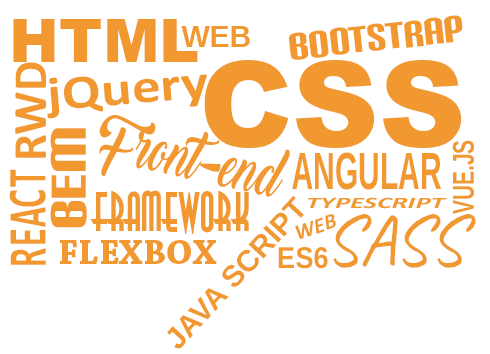

Czas na wyzwanie!
W październiku postawiliśmy przed sobą cel - mając do dyspozycji 120 dni, od zera zostać:
Front-End Developerami.
Będą to cztery miesiące ciężkiej pracy, wyrzeczeń i pogodzenia nauki i pracy zadowodą. Strona ta jest realnym zapisem naszych starań. Nie dajemy prowadzić się za rękę kursom i tutorialom, przepisując z nich krok po kroku kod, by stworzyć efektowną stronę. To miejsce tokuźnia naszych starań, gdzie możemy czerpać wiedzę i doświadczenie z naszych starań i pomyłek. Hmm... a jest z czego czerpać!